India's distribution transformers (DTs) are where renewable intermittency and growing evening demand collide. Rooftop solar exports at midday and disappears at sunset exactly as cooling and lighting load peaks; on the Indian Energy Exchange this “duck curve” takes evening prices to the ₹10/kWh ceiling while midday blocks clear near ₹1.91/kWh[1, 2, 3]. Overloaded DTs fail: BESCOM lost 38,288 of 497,991 transformers (7.96%) in FY 2023-24, 29% of them to overload[4, 5]. Regulators have now made flexibility an obligation — Karnataka's DF/DSM Regulations 2026 require DISCOMs to procure demand flexibility of 0.5% of peak, rising to 2.0% by FY 2029-30, on the Maharashtra model of a ₹2,000/kW-yr shortfall penalty[6, 7, 8].
LEO is a software-and-small-hardware coordination layer that a local cooperative or NGO, registered as a demand flexibility aggregator, runs at the DT. It forecasts tomorrow's load and solar per phase, plans three single-phase second-life battery blocks and two automated demand-response programmes around the forecast, corrects live from its own low-cost sensors, protects critical premises during outages through a small backup circuit, and settles everything transparently a day later when smart-meter data arrives. It commands only assets the operator owns; everything on the DISCOM network is a recommendation.
We built the whole system as a running prototype and evaluated it on a simulated year — one week in every month — of a real Hoskote (Bengaluru Rural) street grid with 150 households on a 100 kVA DT, against an identical baseline without LEO.
The economics close because three value streams stack on an overloaded DT: evening power the DISCOM no longer buys (₹3.52 L/yr), DFPO penalty avoided (₹1.22 L/yr) and transformer failures avoided (₹29,003/yr). A two-part contract — the ₹2,000/kW-yr DFPO benchmark plus ₹5.00 per verified evening kWh — falls inside a deal zone (₹4.56–₹5.77/kWh) where the operator, the DISCOM and households all come out ahead. Every price in the model is sourced from public reports, tariff orders and Indian pilots, or flagged for verification.
The challenge asks for affordable, neighbourhood-scale flexibility tools — forecasting, smart load management, demand response, shared storage and local coordination — that keep electricity dependable when renewable supply falls below demand, stay local and manageable, are viable for low-income urban and peri-urban communities, and support the DISCOM[9]. Four facts about Indian distribution grids shape our answer.
Solar generation drives day-ahead prices to their floor at midday — average lowest blocks around ₹1.91/kWh and sometimes below ₹1 — and collapses at sunset, when residential cooling and lighting surge. Evening prices routinely hit the ₹10,000/MWh regulatory ceiling, an average evening premium of about ₹7.92/kWh and a midday-to-evening spread above ₹8,000/MWh[1, 2, 3, 10]. The intermittency gap is therefore daily and predictable, not only a weather event.
BESCOM's DT failure rate has stayed between 7.5% and 8.07%; in FY 2023-24 it lost 38,288 of 497,991 units (7.96%), and sustained overload causes 29.09% of failures[4, 5]. Overloading raises hot-spot temperature and accelerates insulation ageing, cutting an expected 30-year life to 11–15 years; one Indian case study recorded failures within 20–28 months[11, 12]. A 100 kVA unit costs about ₹5.05 lakh to replace; a repair about ₹11,520[13, 14]. Peri-urban DTs that grew with their neighbourhoods without augmentation are the ones at risk — and a failed DT means a multi-day outage for every household on it.
BESCOM's AT&C losses fell to 9.13% in FY 2023-24[15]. The technical part is resistive (I²R) and grows with the square of current, so a disproportionate share is lost precisely at the evening peak; single-phase heavy appliances make Indian LV networks unbalanced, adding neutral current[11, 14].
DISCOMs see the 11 kV feeder through SCADA and the National Feeder Monitoring System[16] but only about 3% of DT meters were communicating in 2024[17]. Smart meters are rolling out under RDSS (over 5.28 crore installed)[18], but the contractual AMISP service level is that 95% of 15-minute data reaches the DISCOM within 8 hours and 98% within 12 hours[19, 20, 21]. Any design that assumes live household data in India today will not work in the field.
Maharashtra's 2024 DF/DSM Regulations created Demand Flexibility Portfolio Obligations (DFPO): 2.5% of the previous year's peak, rising to 7.0% by FY 2029-30, measured in kW at a single instance in the peak period, with a ₹0.20 crore/MW (₹2,000/kW) disincentive for shortfall and an equal incentive for over-achievement, and they formally recognise aggregators[7, 8, 22, 23]. Karnataka followed in March 2026 with targets of 0.5% rising to 2.0% and verification by empanelled independent agencies[6, 24, 25]. DISCOMs therefore need a source of verifiable, local kW — and a low-income neighbourhood with an overloaded DT is where that kW is worth the most.
We chose Grid Reliability — Renewable Intermittency. LEO touches four of the illustrative solution areas named in the brief: shared storage with fair-access pooling (second-life batteries), local control with smart load management, demand response and critical-load priority, pooled reliability across users, and a DISCOM-facing dashboard that predicts feeder stress and recommends actions[9].
| Brief requirement | How LEO answers it | Evidence in this document |
|---|---|---|
| Bridge intermittency gaps | Midday solar stored in three per-phase blocks and released over the evening peak; pumps moved into the solar window daily; AC events on stress days; Pre-outage for announced load shedding | Evening peak 129→72 kW; 49,836 kWh/yr of local solar stored; critical premises 100% powered |
| Stay local and manageable | One DT, one edge gateway that keeps running offline, LoRa sensors with no SIM cost, one technician per 20 DTs; no DISCOM equipment is commanded | Operator controls only its own assets; DISCOM receives recommendations |
| Genuinely affordable | Second-life LFP packs; ₹999 IR blasters and ₹2,090 smart plugs instead of new appliances; households pay nothing upfront and bills are unchanged | Operator payback 5.0 yr; pump homes earn ≈₹2,027/yr, AC homes ≈₹1,774/yr |
| Support the DISCOM | Verified kW for DFPO; day-ahead stress forecast; structured recommendations (tap change, outage scope); fewer transformer failures; lower peak purchase and losses | 60.9 kW verified; DISCOM gross saving ₹5.03 L/yr per DT; losses −1,529 kWh/yr |
| Measurable reliability improvement vs a defined baseline | Identical simulated world with and without LEO, 84 days spanning all seasons, metrics M1–M5 plus outage hours and transformer ageing | Section 11 |
| Ownership, O&M and unit economics | Cooperative/NGO aggregator running a cluster of 20 DTs; two-part DFPO contract; household revenue share | Sections 12–13 |
LEO is the missing coordination layer between the DISCOM's feeder-level systems and the households on one transformer. It complements rather than competes with utility ADMS/DERMS: we adopt the DERMS idea of aggregating many small resources into one controllable virtual resource, but without claiming utility-grade control authority[26, 27].
A local cooperative, NGO or self-help-group federation registers as a demand-flexibility aggregator — the role the MERC and KERC regulations recognise[6, 7, 23] — and runs LEO on a cluster of about 20 DTs with one technician. The DISCOM pays it under a two-part contract: the DFPO capacity value for verified kW plus a payment per verified evening kWh. Households pay nothing upfront, their DISCOM bills are untouched, and they are paid from the operator's realised revenue; there is no penalty anywhere in the system. Section 12 details the model.
| Feature | What it does | Why it matters |
|---|---|---|
| Day-ahead stress forecast | Per-phase P10/P50/P90 load and solar, run through a three-phase network model | Overloads and voltage problems are predicted a day early, with the reason (load, temperature, irradiance) |
| Peak-shaving storage | Water-filling plan, re-solved every 15 minutes from the busbar CT | Energy goes to the highest-load intervals, so the battery never runs empty before the peak |
| Automated pump shifting | Enrolled pumps skip their 18:00 run; LEO schedules it in the midday hour with most solar surplus (≈0.71 kWh per home per day) | Moves load out of the evening ramp every day, onto local solar |
| Automated AC events | On DFPO stress days enrolled ACs cycle to 40% for 2 h with pre-cooling; ≈11.3 kW per event | Large, reliable kW at the peak instant, worth paying ₹75 per home per event |
| SMS / IVR offers | Contextual bandit chooses ₹0, ₹25, ₹50 or ₹100 per household per event | Reaches homes without smart devices or smartphones; pays only where it buys a real cut |
| Pre-outage | On a DISCOM load-shedding notice, reserve what the backup premises need (×1.5) and keep shaving with the rest | Critical premises stay powered through scheduled cuts |
| Backup circuit | Inverters island onto their backup ports; premises served by priority with current limits; staggered re-transfer | Clinic, water and livelihoods keep running; no cold-load surge on restoration |
| Recommendations | Tap-change, inverter-setting and outage-scope notes to the DISCOM, with evidence | LEO advises; the DISCOM decides on its own network |
| Explainable console | Predicted events with reasons, every action with its why, outcome revealed against the forecast | Operators and DISCOM engineers can audit every decision |
| Transparent settlement | IPMVP baselines, random holdout, DR paid first, pooled rewards capped by realised revenue | Defensible to the independent verification agency; households never promised more than was earned |
At 19:30 the forecast predicts phase-Y undervoltage to 218 V and a transformer overload to about 206% of rating from 16:15. The console lists each predicted event with its causes and LEO's planned response: charge each block from midday solar, discharge 41 kWh per phase across 16:30–21:00, move 20 pumps to 10:45, call an AC event and SMS offers for 17:45–19:45. At 23:30 the operator approves. Next evening the console shows the plan executing, the live corrections, and the outcome against the forecast; residual undervoltage on long lines is escalated to the DISCOM as a tap-change recommendation.
The household enrols once (app, SMS or IVR, with per-purpose consent[34]), and a ₹2,090 smart plug or ₹999 IR blaster is fitted. The pump now runs at midday on neighbourhood solar; on about twenty summer evenings the AC is cycled for two hours after a pre-cool, with an SMS beforehand and a one-tap override. It earns ₹100/month (pump) or ₹75 per event (AC), plus its share of the community pool, and its electricity bill is unchanged.
BESCOM announces a 19:40–21:10 cut at 14:00. LEO enters Pre-outage, tops the blocks up to the backup reserve and SMSes all 150 homes. At 19:40 the inverters island and the clinic, borewell pump, tuition centre and shops stay powered from the backup circuit by priority; at 21:10 they are re-transferred to the grid in batches.
The DISCOM dashboard shows an action queue — forecast undervoltage on phase B with a recommended tap raise, an outage with its scope — each with acknowledge/dispatch/resolve states and machine-readable JSON, plus verified kW for DFPO reporting.
LEO has three user-facing applications: one web app for the operator and the DISCOM, a citizen app, and SMS/IVR for households without smartphones. All are role-based (operator, DISCOM, household), read from the same backend, and run in the prototype today. The operator console was designed around one question: what did LEO see coming, what did it do and why, and what actually happened?
| Screen | Who | What it shows and does |
|---|---|---|
| Map control room | Operator | deck.gl map over real satellite imagery of the neighbourhood: feeder lines coloured by voltage, the transformer, battery blocks, sensors and backup premises. A timeline replays any recorded day, with a toggle between what happened and what was forecast the day before. Banners state the current situation in plain words. |
| What LEO predicted | Operator | Day-ahead forecast of transformer loading (forecast vs actual) and one card per predicted event: when it was predicted, why (load, temperature, irradiance), LEO's planned response, and the outcome once the timeline reaches it. Events the forecast missed are flagged. |
| What LEO did, and why | Operator | Time-ordered action log — forecast issued, plan approved, DR offers, pump shift, AC event, battery charge/discharge, mode changes, outages, escalations — each with its reason, filterable, click-to-seek on the timeline. |
| Scenario runs | Operator | Peak day with and without LEO, announced load shedding, unplanned outage, and a sunny surplus day with and without LEO; a glossary explains every term. |
| Plan review | Operator | Per-phase charge/discharge schedule and the DR offers for tomorrow; the operator approves before anything is dispatched. |
| Live operations | Operator | Battery state of charge and far-end voltage per phase. |
| DR events | Operator | Offers sent, accepted and held out, response rate and offers by amount (₹0/25/50/100). |
| Settlement and members | Operator | Daily ledger by stream with the payout scaling factor and per-household drill-down; outage-day backup fees; member registry (sanctioned load, business, critical premise). |
| Impact and economics | Operator, DISCOM | Section 11 and 13 results for every configuration: reliability against the baseline, monthly charts, who gains what, the deal zone, sensitivity and the assumptions register. |
| Action queue | DISCOM | Recommendations (tap-change raise, review inverter settings, outage scope) with time window, phase, evidence and machine-readable JSON; states open → acknowledged → dispatched → resolved. |
| Reporting | DISCOM | Verified flexibility against the random holdout, DFPO progress, registered critical premises, and a planning insight on recurring stress. |
| Home, Offer, Earnings | Household | Current earnings and the latest offer in plain language (“Earn ₹50 if you switch off your cooler or pump 7–9 pm tonight”); settled payments by stream (DR incentive, surplus absorption, discharge rebate, backup fee). |
| Usage | Household | 15-minute import and export, explicitly labelled “last updated yesterday” because meter data arrives a day late. |
| Consent | Household | Per-purpose, revocable consent: meter-data access, DR offers, critical-premise disclosure, sensor hosting (DPDP Act). |
| Outage and Community | Household | Backup energy received during an outage (for registered premises); neighbourhood totals — total paid, battery status, outage minutes protected. |
Inclusion. The app and SMS/IVR share one backend path for offers and responses. In the pilot, enrolment, consent, offers, earnings, load-shedding and restoration alerts, outage reporting and STOP are designed to work over DLT-registered SMS and an IVR in Kannada, Hindi and English, so households without smartphones are not excluded[28, 35]. The prototype sends offers and alerts through a mock SMS service; the IVR is designed but not built.
Technology. Next.js 15 (App Router) with React 19 and Tailwind CSS 4; a deck.gl 9 map[36]; a FastAPI service over PostgreSQL for all data; role-based access enforced at the route level; everything packaged with Docker Compose alongside the mock field devices. The prototype uses stub logins (operator, DISCOM, household); a pilot uses managed authentication with the same roles.
The architecture follows one rule: the operator commands only assets it owns, and everything that must keep working during an internet outage runs on the neighbourhood edge gateway. Figure 1 shows the system context; Figure 2 the components by tier with the protocol on each link. Component numbers follow our System Architecture v3.0[28], updated to the built system.
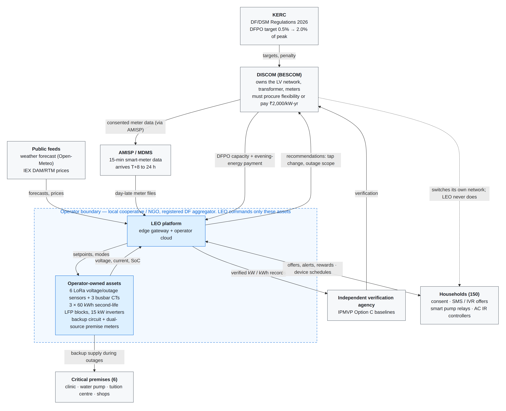
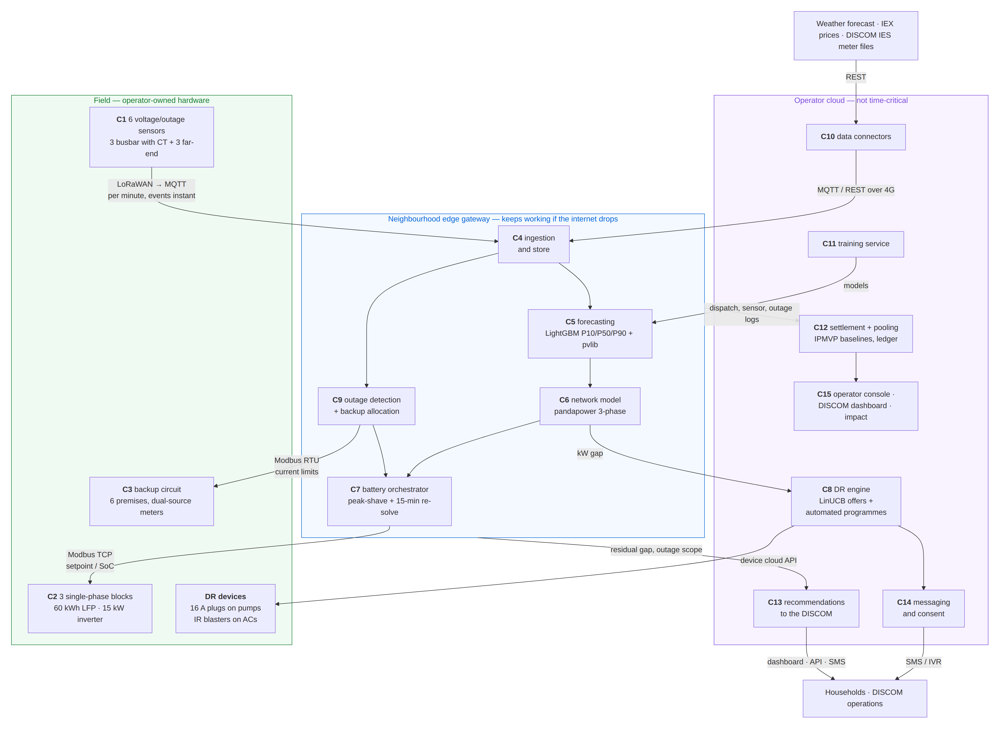
| # | Component | Tier | Role | Interface / protocol |
|---|---|---|---|---|
| C1 | Voltage/outage sensors | Field | Per-phase RMS voltage every minute, power-fail/restore instantly; busbar units add a CT | LoRaWAN IN865 → ChirpStack → MQTT |
| C2 | Three single-phase storage blocks | Field | Second-life LFP + BMS + 15 kW hybrid inverter (grid and backup ports) | Modbus TCP (SunSpec where supported) |
| C3 | Backup circuit and premise meters | Field | Separate LV cable to 6 premises; dual-source meters with current limiters | Modbus RTU (RS-485) |
| — | Automated DR devices | Field (homes) | 16 A smart plugs on pumps, Wi-Fi IR blasters on ACs | Wi-Fi via device cloud API |
| C4 | Ingestion and store | Edge | Validates and timestamps every observation; single source of truth on the gateway | MQTT, Modbus polling |
| C5 | Forecasting inference | Edge | LightGBM quantile load model + pvlib PV per phase | — |
| C6 | Network model | Edge | pandapower 3-phase power flow: violations and safe charge/discharge limits | — |
| C7 | Battery orchestrator | Edge | Day-ahead water-filling plan; 15-minute receding-horizon re-solve; Normal/Pre-outage modes | Modbus TCP to C2 |
| C8 | Demand-response engine | Cloud | Event days and windows; disjoint LinUCB offers; automated pump and AC programmes | SMS/IVR via C14; device API |
| C9 | Outage detection and backup | Edge | Classifies scope from sensor pattern; Backup/Restoration modes; premise allocation | Modbus RTU to C3 |
| C10 | Data connectors | Cloud | Weather, IEX, SLDC, consented meter data | REST; India Energy Stack |
| C11 | Training service | Cloud | Weekly load-model retrain, PV calibration | — |
| C12 | Settlement and pooling | Cloud | IPMVP baselines, holdout verification, two-part revenue, DR payments, Streams 1–2 | UPI payouts |
| C13 | Recommendation engine | Cloud | Residual gaps and outages → structured DISCOM actions | Dashboard, API/webhook, SMS |
| C14 | Messaging and consent | Cloud | DLT-registered SMS, IVR in Kannada/Hindi/English, per-purpose consent | SMS / IVR |
| C15 | Consoles | Cloud | Operator console, DISCOM dashboard, impact and economics | HTTPS |
Field hardware is cheap, standard and operator-owned. Edge components are those whose failure would be unsafe or costly if the internet dropped — live battery control, outage detection and the backup circuit. Cloud components need history, people or money and tolerate hours of latency — training, DR offers, settlement, recommendations and the consoles. This split also makes multi-DT operation cheap: one cloud serves a cluster; each DT adds only a gateway and field hardware.
Energy flows are shown as a day in Figure 9 (Section 11) and money flows as a Sankey in Figure 10 (Section 13).
Household meter data arrives 8–24 hours late[19], DT meters rarely communicate[17], and only the operator's own sensors are live. LEO therefore plans a day ahead from forecasts and corrects within the day using simple, transparent rules on its own measurements. Figure 3 puts the latency on every arrow.
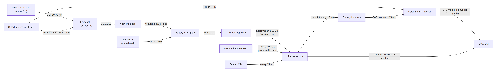
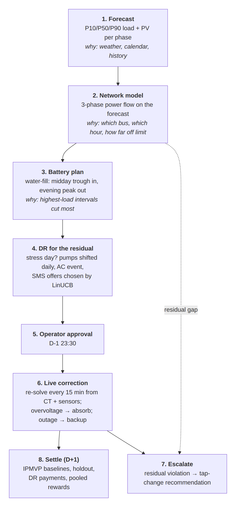
A LightGBM quantile model[37] predicts gross load per phase at P10/P50/P90 for 96 fifteen-minute intervals from weather forecasts (temperature, humidity, irradiance)[38], calendar and holiday features, and lagged consumption that respects the meter-data latency rule — a feature is only used if it would have arrived by run time. Rooftop PV behind net meters is invisible, so a pvlib physics model[39] is scaled by a calibration factor fitted on clear-sky middays and multiplied by each home's installed kWp; net load is gross minus PV. On weeks the model never saw in training (four quarterly folds), the evening feeder peak was forecast with a mean absolute percentage error of 1.9% and per-phase load with a 7.6% weighted error; actual load exceeded P90 5.1% of the time (nominal 10%), i.e. slightly conservative. These are on synthetic data and will be wider in the field; Section 19 lists the validation we plan.
pandapower's unbalanced three-phase power flow[40] runs on a feeder generated from the OpenStreetMap street graph[41] (transformer, minimum-spanning-tree LV lines, households at real building footprints, round-robin phase assignment with deliberate imbalance). It returns per-bus, per-phase voltage and transformer and line loading, flags violations of the ±6% band, and gives each block's safe charge and discharge limits from the busbar voltage sensitivity, so a battery action never creates a violation of its own.
Both directions are water-filling problems on the phase's load curve: in the evening, find the level such that shaving everything above it uses exactly the energy the block holds; at midday, find the level such that filling everything below it uses exactly the energy the block can take — the lowest-load midday intervals are those where rooftop PV exports, so the block absorbs local surplus first. The same solver runs day-ahead on the P50 forecast (the plan the operator approves) and every 15 minutes on what is left of the window, with the phase load measured by the busbar CT and the forecast bias-corrected. A far-end overvoltage triggers extra charging. SoC stays within 15–90%. In Pre-outage the floor rises to 1.5× the backup premises' allowance for the announced cut; in Backup the floor drops to 5%.
Huang et al. schedule storage with a prediction-free, dual-reference online optimisation: instead of trusting a multi-hour forecast, the battery tracks two learned reference signals — an Informative Reference Trajectory (a target state-of-charge curve built from similarity-weighted historical days) and a real-time value benchmark[42]. We adopted this scheduling idea because LEO cannot rely on accurate long-horizon forecasts, and we did not adopt the paper's double-auction market (Section 9). LEO implements it in three parts:
Which planner ran in the evaluation. The year-long evaluation in Sections 10–11 used the water-filling planner: its single objective is exactly the one the DT needs (flatten the evening peak), it is closed-form and explainable, and the same solver runs the 15-minute live re-solve. The IRT planner is implemented and exercised on sample days; it becomes the default once ToD tariffs reach the operator's connection and realised history replaces the bootstrap library, because it adds price awareness and history-based robustness that water-filling lacks.
Event days. DFPO is measured in kW at a single instance in the peak period[7], so DR is reserved for the year's most stressed days — the top 5% by forecast evening peak, about 22 events a year, 2 hours each. Tata Power-DDL called 12–16 events a year, three to four a month in April–September[44].
Automated programmes. 70% of pump owners (21 homes) enrol a smart plug: every day their pump moves from 18:00 to the midday hour with the most forecast solar surplus, with a 5% household override. 60% of AC owners (19 homes) enrol an IR blaster: on event days the AC cycles to 40% for two hours, pre-cools in the two hours before (30% of the curtailed energy) and rebounds slightly after (20%), with a 10% override. Each participating home is paid ₹75 per event; each pump home ₹100/month.
SMS / IVR offers. For homes without devices, a contextual bandit chooses a flat offer of ₹0 (appeal), ₹25, ₹50 or ₹100 per event, maximising expected value of the cut (kW at ₹2,000/kW-yr spread over the year's events plus the ₹7.92/kWh evening premium) minus the expected payout. We use disjoint LinUCB[45] — one ridge regression per offer level — with context features including window load, appliance ownership, whether a shop is open during the window, and the household's separate response rates to paid offers and to appeals. It is pre-trained on a randomised pilot at real event times and offer cadence, then serves greedily with a small exploration bonus. Offers respect a 4-per-month cap and a 3-day gap; 10% of eligible homes are held out at random to verify the programme's causal effect. Reduced energy rebounds by 50% after the window.
Calibration against Indian pilots. Our simulated SMS acceptance is 23% against Tata Power-DDL's 56% average participation (with ₹250 payouts)[44] — deliberately conservative. Our automated AC events deliver ≈0.08 kW per connected customer, inside the 0.03–0.16 kW range measured by BYPL and AEEE's automated DR pilot[46].
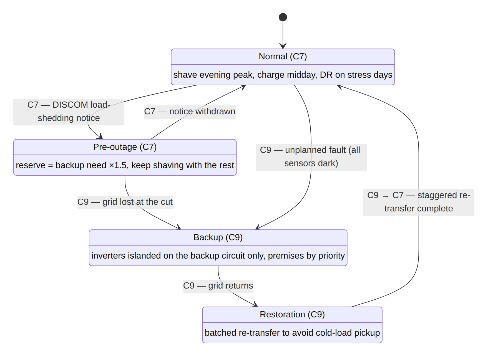
Power-fail messages from the six sensors are classified by pattern: all sensors dark → upstream fault; one phase → phase fault; one far-end only → local. Inverters anti-island automatically (IEC 62116 / IEEE 1547)[47] — this is inverter behaviour, not an orchestrator decision — and then supply only their backup ports. C9 allocates each phase's available energy (SoC down to 5%, spread over the expected outage) to premises by priority (health 16 A, water 10 A, livelihood/education 6 A) and on restoration re-transfers them in batches to avoid a cold-load surge. Figures 6–8 show the three scenarios.
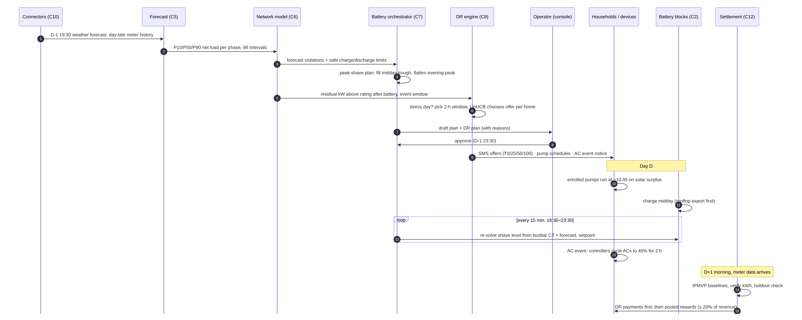
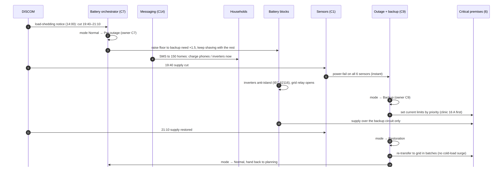
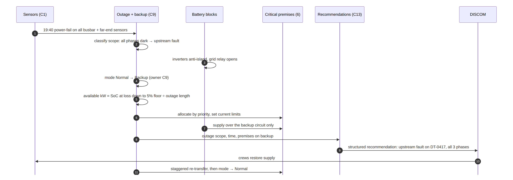
Settlement runs once a day when meter data for the previous day arrives. Each household's reduction is its IPMVP Option C baseline (same window over similar non-event days, adjusted by that day's pre-event usage) minus actual consumption; the random holdout tests whether the programme caused the reduction and whether baselines are biased[32, 33, 48]. Revenue is the two-part contract (Section 13) plus backup fees. Payouts are sized backwards from realised revenue: a share α = 20% forms the payout budget; contractual DR payments are paid first; the rest funds Stream 1 (households exporting solar while the blocks charge, pro-rata) and Stream 2 (a rebate of the blocks' evening discharge, allocated down a participation-ranked queue with a per-household cap). If claims exceed the budget they are scaled pro-rata, never promised. No payment is ever negative. This follows sonnenCommunity's pooled model rather than a per-kWh auction[27, 49] (Section 9).
When local resources cannot close a gap — typically undervoltage along long lines, which a battery at the busbar cannot fix — LEO sends the DISCOM a structured recommendation (e.g. raise the tap on phase B, 16:15–21:00, with forecast and residual evidence), and for outages, the detected scope. The operator console pairs each predicted event with its reasons, the actions LEO took and why, and the outcome compared with the forecast.
LEO uses the standards Indian utilities and vendors already use, so moving from the prototype to a pilot changes addresses and drivers, not code. LEO talks to the simulator through MQTT, Modbus and REST exactly as it would to real devices[28].
| Standard / protocol | Layer | Prototype use | Real-world integration |
|---|---|---|---|
| DLMS/COSEM (IS 15959, IEC 62056), IS 16444 | Meter data model | Synthetic meter files keyed by OBIS codes, released on the SLA schedule by a mock endpoint | Household AMI data via the DISCOM's MDMS / India Energy Stack |
| India Energy Stack (Beckn, W3C DID, Verifiable Credentials) | Consented data exchange | Mock endpoint with the same schema | Consented meter-data exchange with DISCOMs (four pilot DISCOMs) |
| MQTT | Gateway message bus | Mosquitto broker for all telemetry | Same |
| LoRaWAN IN865–867, ChirpStack | Sensor radio | Simulated ChirpStack payloads | Sensors to the gateway concentrator; no SIM cost; works offline |
| Modbus TCP, SunSpec models | Inverter control | pymodbus mock server, three unit IDs | Three single-phase hybrid inverters; OpenEMS drivers where available |
| Modbus RTU (RS-485) | Premise meters | Mock devices | Dual-source meters with current limiters |
| IEC 62116; IEEE 1547-2018 | Inverter grid behaviour | Anti-islanding modelled per block | Inverter certification; volt-var/volt-watt where supported |
| IEC 61968/61970 (CIM) | Network model exchange | Asset naming in recommendations | GIS / network-model exchange with the DISCOM |
| OpenADR 2.0/3.0; IEEE 2030.5 | DR / DER signalling | Not used | DISCOM-to-aggregator event signals (both referenced by IES) |
| IEC 60870-5-104, DNP3, IEC 61850 | DISCOM SCADA / substation | Not used | DISCOM-internal; LEO never writes to it |
| IPMVP Option C | Measurement and verification | Baselines and holdout in settlement | Verification by empanelled independent agencies (KERC) |
| TRAI TCCCPR 2018 (DLT) | Commercial SMS | Mock SMS service | Registered sender IDs and templates (₹5,900 one-time) |
| DPDP Act 2023 | Personal data | Per-purpose consent model | Legal basis for data handling |
| UPI | Payments | Recorded in ledger | Monthly payouts |
References: DLMS/COSEM and Indian meter standards[50]; India Energy Stack[51, 52]; MQTT[53]; LoRaWAN and ChirpStack[54]; SunSpec Modbus[55] and OpenEMS[56]; anti-islanding[47]; CIM[57]; OpenADR and IEEE 2030.5[58]; IPMVP[32]; TRAI DLT[35, 59]; DPDP[34]; CEA smart-metering interoperability[60].
We grounded the design in one academic paper, two policy roadmaps and several industry deployments, and for each we recorded what we took and what we left out[27]. The single filter every choice passed was: minimal grid-level intervention, genuine affordability, useful to the DISCOM without new capex.
| Decision | Chosen | Rejected | Why (evidence) |
|---|---|---|---|
| Settlement ledger | Plain relational ledger, Sonnen-style pooled model | Blockchain / DLT settlement | Brooklyn Microgrid (LO3 Energy) stalled at pilot scale; its retrospective and an empirical comparison both found a database faster, cheaper and better suited to small, periodic, locally-trusted settlements[61, 62]. UPPCL's P2P pilot was 12 participants with mock trading[63]. |
| Price mechanism | Pooled capacity with fair-access rules | Iterative P2P double auction between households | Auction convergence assumes price-elastic participants (e.g. microgrids with storage); a household's rooftop export is nearly fixed regardless of price[27, 42]. |
| DR learning | Contextual bandit (disjoint LinUCB) | Full reinforcement learning | The question — which offer to make this household now — has no long action sequences; fatigue and budget are captured as context features. Bandits converge with far less data and are standard for which-offer problems[27, 45]. |
| DR learner structure | One model per offer level | One shared linear model with level as a feature | The shared model paid shops that are open during the event and non-responders, and gave ₹0 to price-sensitive homes; separate per-arm models learn each offer's own response. |
| DR mechanism | Automated pump shifting and AC cycling + SMS offers | SMS behavioural DR only | A typical low-income home cuts ~0.17 kW by SMS; automated devices give reliable kW and daily shifting, and cost ₹999–2,090[31, 46]. |
| DFPO revenue unit | kW at the peak instance + ₹/kWh evening energy | ₹/kWh only | MERC measures flexibility in kW at a single peak instance and penalises shortfall per MW[7]; most DISCOM value is avoided evening purchase, so an energy component lets the DISCOM share it. |
| Battery planner | Water-filling peak shave, re-solved every 15 minutes | Greedy rule: discharge flat out when voltage dips | The greedy rule emptied every block by 19:00 — before the worst interval. Water-filling spends energy on the highest-load intervals by construction. |
| Storage topology | Three single-phase blocks | One three-phase battery | Indian LV networks are unbalanced; a balanced three-phase inverter cannot relieve one phase. Three 10–60 kWh second-life packs are also easier to procure than one large pack. |
| Battery chemistry | Second-life LFP | New packs; NMC | Second-life packs cost 40–60% of new[64, 65]; LFP has far better thermal stability in tropical heat, and fade flattens under gentle stationary cycling[66, 67, 68]. |
| Inverter size | 15 kW per phase | 7.5 kW per phase | Research prices one 7.5–15 kW unit at the same ~₹1.2 L; the larger rating cut the verified peak by ~10 kW more for no extra capex. |
| Sensors | Six LoRaWAN loggers + busbar CTs | Cellular (GSM/NB-IoT) per sensor | No SIM cost, no dependence on mobile operators, works when the internet is down; ESMI documented GSM disruptions[29]. |
| Live data | Operator's own sensors only | Live household smart-meter data | AMISP SLAs deliver 15-minute data 8–24 h late; designs that assume it live fail in the field[19, 21]. |
| Control authority | Advisory to the DISCOM; control only own assets | Full ADMS/SCADA, closed-loop VVO/FLISR | Requires field-device authority a third party should not claim; we keep the DERMS aggregation idea with a clean interface boundary[26]. |
| Ownership | Cooperative / NGO DF aggregator | Distribution franchisee | Bhiwandi cut AT&C from ~63% to 19–25% but several franchises were cancelled and the input-based model is criticised[69, 70, 71]; the aggregator role exists in regulation today. |
| Simulation environment | Own closed-loop LV simulator (pandapower) | Grid2Op | Grid2Op targets transmission-level redispatch and French grids, not Indian LV demand-side flexibility[72]. |
No DISCOM data was available, so — as CEEW recommends while AMI matures[17] — we built a synthetic but physically grounded world and ran LEO against it through the same interfaces it would use in the field.
We replay one week in every month (days 8–14) — 84 days covering summer, monsoon and winter — under each configuration, scaling sums to a year. Every configuration sees the same world, weather, outage schedule and household draws, so differences come from LEO's decisions alone. The load forecast is retrained in four quarterly folds with the evaluated weeks held out, so no forecast is scored on data it was fitted to. Battery state of charge, transformer temperature and DR history carry over day to day within each week. Transformer ageing uses the IEEE C57.91 thermal model with first-order top-oil dynamics and the ageing acceleration factor[74]; technical losses come from the power flow.
| Configuration | What is enabled |
|---|---|
| Baseline | No battery, no DR, no backup circuit — same world, weather, outages and households |
| LEO software + SMS DR | Forecasting, network model, SMS offers; no storage, no devices |
| LEO software + automated DR | Adds smart pump plugs and AC IR blasters |
| LEO, 3 × 15 / 30 / 45 / 60 kWh | Battery blocks of each size (C/2 to C/4 inverters) + SMS DR + backup circuit |
| LEO, 3 × 30 / 60 kWh + automated DR | Battery + automated DR + SMS DR + backup circuit (recommended: 60 kWh) |
| Metric | Definition |
|---|---|
| M1 Overload trips / outage hours | LV fuse trips from sustained conductor overload; customer-hours of outage, including expected DT-failure outages (failures/yr × 48 h repair × 150 homes) |
| M2 Voltage quality | Customer-hours outside ±6% (all buses) and far-end sensor minutes |
| M3 Critical-premise availability | Backup-served minutes ÷ outage minutes at registered premises |
| M4 Evening peak reduction | Transformer evening peak (16:30–23:30), average and worst day |
| M5 Verified flexibility | Mean cut in the DT's evening peak on the year's 10% most stressed days (the DFPO measurement days), kW |
| Transformer ageing | Equivalent ageing hours per year → expected life and failure rate |
All figures are per transformer per year, measured against the defined baseline — the identical world without LEO (Section 10). The recommended configuration is three 60 kWh blocks on 15 kW inverters plus automated DR.
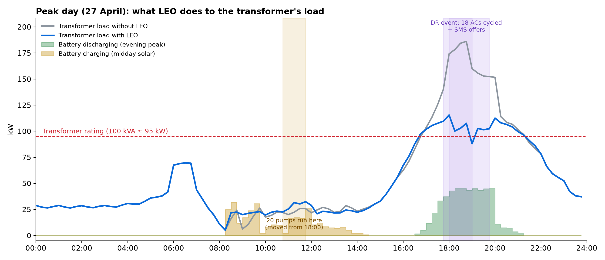
| Configuration | Evening peak avg (kW) | Worst day (kW) | Verified kW (M5) | Critical availability (M3) | DT failure rate | Hours overloaded | Undervoltage cust-h (M2) | Losses (kWh) |
|---|---|---|---|---|---|---|---|---|
| Baseline (no LEO) | 129 | 167 | 0 | 0% | 5.8% | 967 | 59,085 | 11,890 |
| LEO software + DR, no storage | 129 | 166 | 1.4 | 0% | 5.1% | 967 | 59,137 | 11,882 |
| LEO software + automated DR, no storage | 116 | 145 | 19.7 | 0% | 1.8% | 951 | 47,023 | 11,290 |
| LEO, 3 x 15 kWh blocks | 108 | 150 | 20.5 | 87% | 2.0% | 937 | 54,219 | 11,550 |
| LEO, 3 x 60 kWh, 15 kW inverters | 83 | 119 | 47.5 | 100% | 0.2% | 266 | 44,991 | 10,855 |
| LEO, 3 x 60 kWh + automated DR | 72 | 108 | 60.9 | 100% | 0.1% | 130 | 34,227 | 10,360 |
A local cooperative, NGO or self-help-group federation registers with the DISCOM as a demand-flexibility aggregator — a role recognised by the MERC 2024 and KERC 2026 regulations[6, 7, 23]. It owns the sensors, batteries, backup circuit, devices and the LEO software licence, and runs a cluster of about 20 DTs — for example one BESCOM O&M section or one gram panchayat. Households are members: they consent, respond to offers, and receive payments; they own nothing and risk nothing.
| Actor | Owns | Controls | Does not control | Relationship |
|---|---|---|---|---|
| DISCOM | LV network, DT, meters (via AMISP), meter data | Switching, taps, crews, restoration | Operator assets | Buys verified flexibility under DFPO; receives recommendations; shares meter data with consent |
| Operator (cooperative / NGO aggregator) | Sensors, batteries, backup circuit, devices, LEO | Its batteries, backup circuit, devices, messages, ledger | DISCOM supply; household bills | Runs LEO; earns DFPO payments; pays households |
| Households (150 per DT) | Appliances; consent | Whether to respond or override | Anything else | Members; receive DR payments and pooled rewards |
| Critical premises (6) | Their loads | — | — | Pay a backup subscription and per-kWh fee |
| Independent verification agency | — | Verification | — | Reproduces LEO's baselines from DISCOM meter data |
| Asset | Routine | Life / replacement | On failure |
|---|---|---|---|
| Second-life LFP packs + BMS | Monthly BMS health and temperature review; temperature-aware depth of discharge in summer | min(7 years, 2,500 equivalent full cycles) — about 7 years at 336 cycles/yr; replacement budgeted | BMS limits or refuses commands; block isolated, others continue |
| Hybrid inverters | Quarterly filter cleaning, firmware updates | 10+ years | Inverter reverts to safe default after a command timeout |
| LoRa sensors and CTs | Quarterly check; battery-backed for last-gasp | 5 years | Gateway flags missing data; forecast-only operation |
| Smart plugs / IR blasters | Self-reporting; household-swappable | 5 years | Household reverts to manual; excluded from events until fixed |
| Backup circuit and premise meters | Annual inspection with the DISCOM | 20+ years (cable) | Premise falls back to grid only |
| Edge gateway | Remote monitoring; UPS | 5 years | Cloud flags gateway offline; blocks run their last plan, then safe default |
The household share α of revenue, the backup fee and the DR offer levels are set by the cooperative's members each year, within the bounds the unit economics allow (Section 13). The ledger is open to members; payouts can never exceed realised revenue and are never negative.
Unit economics are computed by multiplying the simulated physical quantities (kW verified, kWh shifted, hourly grid import, transformer ageing, backup minutes, DR offers and payouts) by prices in one assumptions file, each tagged with its source in the model's assumptions file. Recommended configuration: three 60 kWh blocks on 15 kW inverters plus automated DR, per transformer, per year, in a cluster of 20 DTs.
| Item (per DT) | ₹ |
|---|---|
| Sensors and gateways | ₹59,500 |
| Smart relays controllers | ₹62,871 |
| Battery packs | ₹9.00 L |
| Inverters | ₹3.60 L |
| Backup circuit | ₹24,000 |
| Installation | ₹1.69 L |
| Registration setup | ₹10,295 |
| Total per DT | ₹15.85 L |
| Item (per DT per year) | ₹ |
|---|---|
| Technician | ₹19,287 |
| Cloud connectivity | ₹4,800 |
| Sms | ₹613 |
| Insurance | ₹15,854 |
| Maintenance | ₹23,781 |
| Mv agency | ₹0 |
| Total per DT per year | ₹64,336 |
| Line | ₹ per year |
|---|---|
| Dfpo capacity | ₹1.22 L |
| Evening energy | ₹2.53 L |
| Energy settlement | ₹87,264 |
| Backup fees | ₹16,733 |
| Revenue | ₹4.79 L |
| Paid to households (DR first, then pooled share) | −₹95,786 |
| Operating costs | −₹64,336 |
| Net cash per year | ₹3.19 L |
| Payback on capex | 5.0 years |
| 10-year NPV at 10% (battery replacement and salvage included) | ₹1.10 L |
| Line | ₹ per year |
|---|---|
| Power purchase saved | ₹3.52 L |
| Dfpo penalty avoided | ₹1.22 L |
| Dt failures avoided | ₹29,003 |
| Paid to operator capacity | −₹1.22 L |
| Paid to operator energy | −₹2.53 L |
| Energy settlement with operator | −₹87,264 |
| Retail revenue lost to dr | −₹2,108 |
| Gross saving | ₹5.03 L |
| Net after paying the operator | ₹38,890 |
The DISCOM's gross saving is ₹5.03 L per DT per year — ₹50.32 Cr per year across 1,000 overloaded DTs. It reduces technical losses on this DT by 1,529 kWh/yr (12.9%) and stops buying 50.6 MWh of evening power a year. Most of the gross saving flows to the operator under the contract because the operator carries the capital, devices and household payments; the split is a negotiated point inside the deal zone below.
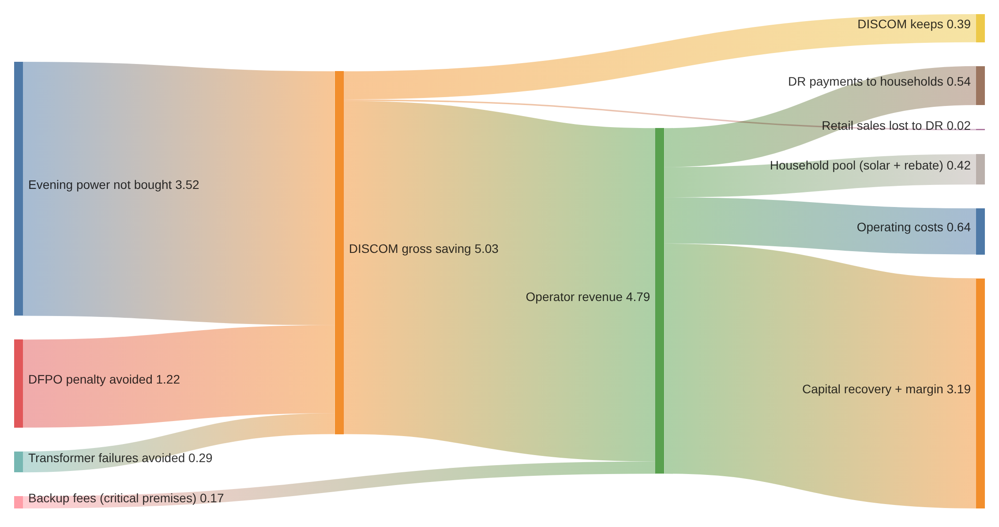
Payments between the operator and the DISCOM cancel out, so a deal exists exactly when their combined value is positive. For the recommended design the operator breaks even at ₹4.56 per verified evening kWh and the DISCOM gains up to ₹5.77; the contract rate of ₹5.00 sits inside, and the combined 10-year value is ₹3.49 L. Smaller batteries and SMS-only DR do not close (Figure 11).
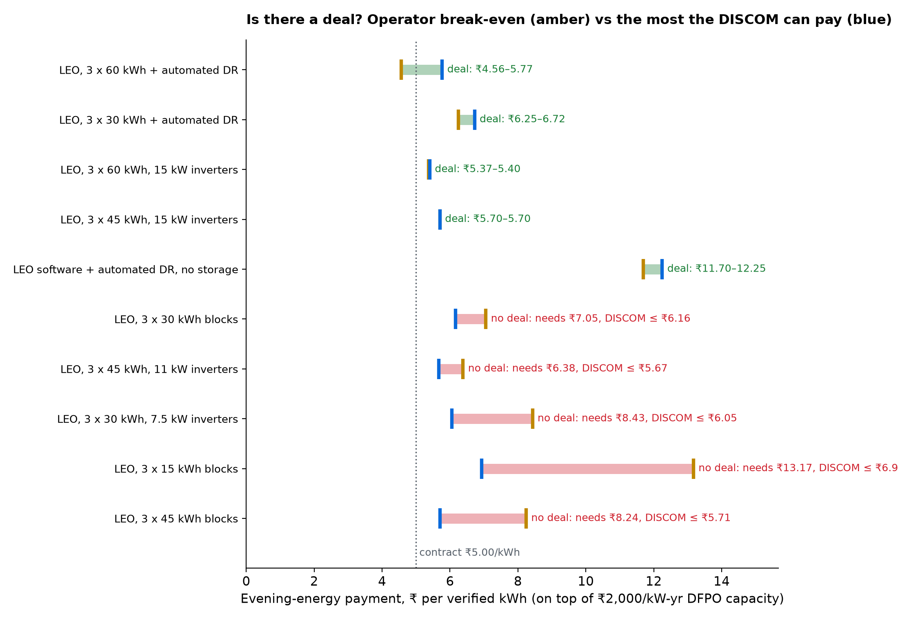
| Uncertain input | Combined value stays positive if | Assumed |
|---|---|---|
| DFPO shortfall penalty | ≥ ₹1,067/kW-yr | ₹2,000 (MERC) |
| DISCOM evening power price | ≥ ₹8.73/kWh | ₹10.00 (IEX cap) |
| Second-life battery price | ≤ ₹6,223/kWh | ₹5,000 |
| Insurance + maintenance | ≤ 6.1% of capex | 2.5% |
| Change | Operator 10-yr NPV | DISCOM net / yr | Payback (yr) |
|---|---|---|---|
| Energy rate -30% | −₹2.63 L | ₹1.15 L | 6.1 |
| Energy rate +30% | ₹4.83 L | −₹37,056 | 4.2 |
| Battery price -30% | ₹5.38 L | ₹38,890 | 3.9 |
| Battery price +30% | −₹3.18 L | ₹38,890 | 6.1 |
| Cycle life -30% | −₹54,286 | ₹38,890 | 5.0 |
| Cycle life +30% | ₹1.10 L | ₹38,890 | 5.0 |
| Peak power price -30% | ₹1.10 L | −₹95,498 | 5.0 |
| DFPO penalty -50% | ₹1.10 L | −₹22,001 | 5.0 |
| Cluster of 5 DTs, not 20 | −₹3.37 L | ₹38,890 | 6.4 |
| 30% capital grant | ₹5.86 L | ₹38,890 | 3.5 |
| Household share 0.5 | −₹7.73 L | ₹38,890 | 9.1 |
| Who | Per year | How |
|---|---|---|
| Pump home (21 homes) | ₹2,027 | ₹100/month fee + ₹546 ToD bill saving (if ToD reaches LT domestic) + pool share |
| AC home (19 homes) | ₹1,774 | ₹75 per event ≈ 20 events + pool share |
| Every other home | ₹282 | Pool share (solar absorption and discharge rebates) + any SMS offers accepted |
| Critical premise | backup at ₹12/kWh + ₹150/month | vs ₹15,000+ per kWh for a lead-acid home inverter replaced every 3–4 years, or a diesel genset |
For comparison, Tata Power-DDL's pilot paid ₹250 per event (with ₹50/₹100 tiers) and ran 12–16 events a year[44] — about ₹2,250 a year for a household attending nine events; LEO's participating homes earn in the same range. Households are paid from the operator's realised revenue at a share α = 20%; a deal remains possible up to α ≈ 29%. A low-income household that could not afford a ₹15,000 inverter gets reliability on its street and income, with nothing to buy[14].
| Per DT per year | Per 1,000 overloaded DTs per year |
|---|---|
| ₹5.03 L DISCOM gross saving | ₹50.32 Cr |
| 50.6 MWh of evening power not bought at ₹10/kWh | 50.6 GWh |
| 60.9 kW verified flexibility | 60.9 MW towards DFPO |
| 1,529 kWh technical losses avoided | 1.53 GWh |
| DT failure rate 5.8% → 0.1% | ≈57 fewer DT failures (₹2.90 Cr) |
| 414 customer-hours of failure outages avoided | 414 thousand customer-hours |
| 443 premise-hours of critical supply kept | 443 thousand premise-hours |
| 49.8 MWh rooftop solar used locally | 49.8 GWh |
| ≈₹2,027 per participating household | 150 thousand households reached |
Context. Overload drives about 29% of BESCOM's ~38,000 annual DT failures[4, 5]; Karnataka's DFPO target is 0.5% of peak in FY 2026-27, rising to 2.0% by FY 2029-30[6]. Scaling assumes DTs as overloaded as the simulated one; on healthier DTs the transformer-failure value is smaller, which is why we target overloaded peri-urban DTs first (Section 18).
Social. Clinics, water supply, tuition centres and small shops keep running through cuts; households earn without buying anything; the community's own rooftop solar powers its evening.
The full system runs locally with one command (docker compose up): mock field devices, the edge gateway, the operator
cloud and the web consoles, against a closed-loop simulator. Recorded runs replay the year's peak day, an announced load-shedding day,
an unplanned outage and a sunny low-demand day, each with and without LEO.
| Layer | Prototype | Why |
|---|---|---|
| Simulation | Python: numpy, pandas, pandapower (3-phase power flow), pvlib, osmnx, Open-Meteo history | Open, Python-native, no commercial solver[38, 39, 40, 41] |
| Forecasting | LightGBM quantile models, pvlib with clear-sky calibration | Fast, accurate on tabular data, quantiles for risk |
| Planning | Water-filling peak-shave planner; cvxpy/OSQP reference planner | Closed form, explainable; convex upgrade path |
| DR | Disjoint LinUCB; persona simulator | Learns with little data; personas never visible to LEO |
| Field interfaces | Mosquitto MQTT; pymodbus TCP/RTU mock battery and meters; mock SMS; mock IES | Same protocols as the field |
| Store and APIs | PostgreSQL; FastAPI | Relational ledger; simple REST |
| Consoles | Next.js; deck.gl map over satellite imagery[36] | One web app for operator and DISCOM |
| Evaluation | Year-sampled sweep across configurations; economics from one assumptions file | Reproducible; prices change without re-simulation |
| Area | Prototype | Real deployment |
|---|---|---|
| Household meter data | Synthetic, released on the AMISP SLA schedule by a mock IES endpoint | IES exchange or DISCOM export with consent |
| Voltage sensors | Simulated from power-flow voltages with noise and dropouts | LoRa loggers (ESMI-style), hosted with consent |
| Storage | Battery models behind a pymodbus server | Second-life packs, BMS and hybrid inverters over Modbus TCP |
| Backup circuit | Simulated premise meters | Cable, changeover, dual-source meters; legal basis secured |
| Network topology | Generated from OSM street geometry | DISCOM GIS / consumer indexing |
| Household behaviour | Hidden personas calibrated to pilots | Real households |
| Smart devices | Modelled pump shift and AC cycling | Commercial smart plugs and IR blasters via their APIs |
| SMS / IVR | Mock service | DLT-registered provider; IVR in Kannada, Hindi, English |
| Payouts | Ledger only | UPI |
| DFPO revenue | Contract rates in the assumptions file | Contract under the DISCOM's DF programme |
| Gateway | Docker Compose on a laptop | Raspberry Pi-class device on UPS at the battery site |
All state lives in one PostgreSQL schema shared by the gateway and the cloud; every table carries a run identifier so recorded runs, evaluations and the live system never mix. The ER overview (Figure 12) is generated directly from the schema definition.
| Group | Tables | Key fields | Written by | Read by |
|---|---|---|---|---|
| Network and registry | neighbourhood, bus, line, household, appliance, sensor, battery_block, premise_backup, consent | bus_id, phase, sanctioned load, PV kWp, critical class, per-purpose consent | world builder / DISCOM GIS | network model, DR engine, consoles |
| Runs | run | run_id, LEO on/off, seed, period | simulator / gateway | every table (foreign key) |
| Observations | sensor_reading, meter_interval, battery_telemetry, premise_meter, event | ts_end, voltage, supply present, import/export kWh (day-late), SoC, backup kWh, event kind | sensors (MQTT), MDMS/IES, inverters (Modbus) | gateway, settlement, consoles |
| Forecast and network | forecast, network_result, phase_limit | P10/P50/P90 per phase, per-bus voltage and loading, is_forecast flag, safe kW | forecasting, network model | planner, explainability, recommendations |
| Decisions | plan, dispatch, mode_transition | planned and actual kW, SoC, rule triggered, mode and owner, approval | battery orchestrator, outage module | settlement, consoles |
| Demand response | dr_event, dr_offer | window, target kW, offer (₹), predicted/verified kWh, holdout flag | DR engine, settlement | bandit training, settlement |
| Settlement | ledger, period_revenue | entry type, amount (paise, never negative), scaling factor, revenue lines, α | settlement | households, DISCOM, verifier |
| Recommendations | recommendation | issue, action, phase, evidence, status (open → resolved) | recommendation engine | DISCOM dashboard |
| Evaluation | eval_sweep, eval_day, eval_economics | configuration, day, metrics, priced results | evaluation pipeline | impact page, this document |

| Model | Inputs | Output | Validation |
|---|---|---|---|
| Load forecaster (LightGBM quantile) | Weather forecast, calendar, holidays, lagged load (latency-respecting), phase static features | P10/P50/P90 gross load per phase, 96 intervals | Held-out quarterly folds: evening peak MAPE 1.9%, phase WAPE 7.6%, P90 exceedance 5.1% |
| PV model (pvlib + calibration) | Irradiance, temperature, installed kWp | PV per home and phase | Clear-sky midday fit on net-import data |
| Network model (pandapower 3-phase) | Bus loads, battery setpoints | Voltages, loadings, violations, safe limits | Power-flow convergence every interval |
| Battery planner (water-filling) | Forecast or measured phase load, SoC | Setpoints per 15 minutes | Energy conservation; never below reserve |
| DR bandit (disjoint LinUCB) | Household, engagement, event context | Offer level and expected kWh per home | Holdout comparison; offer-response cross-check against pilots |
| Transformer ageing (IEEE C57.91) | Phase loading, ambient temperature | Hot-spot temperature, ageing hours | Standard thermal model |
| Phase | Timing | Scope | Exit criteria |
|---|---|---|---|
| 0 — Prototype | Done (hackathon) | Full system on simulated world; year-sampled evaluation; unit economics | This document |
| 1 — Shadow pilot | Months 0–6 | One overloaded peri-urban DT in a notified rural/peri-urban BESCOM area; 6 sensors + CTs; consented meter data via MDMS/IES; LEO forecasts and recommends only | Forecast accuracy on real data; sensor uptime; DISCOM acceptance of recommendations |
| 2 — Active pilot | Months 6–15 | Install three second-life blocks, backup circuit (6 premises), smart plugs/IR blasters in enrolled homes; DR events in the April–September season; IPMVP verification with an empanelled agency | Verified kW on DFPO days; critical-premise availability; payouts settled; safety approvals |
| 3 — Cluster | Months 15–30 | 20 DTs in one O&M section under one cooperative operator; two-part DFPO contract with BESCOM; one technician | Operator cash-positive; DT failures tracked against the section's history |
| 4 — Scale | Year 3+ | Multiple clusters and DISCOMs; OpenADR/IEEE 2030.5 event signals from the DISCOM; convex planner; additional devices (geysers, EV chargers) | DFPO portfolio share; replication playbook |
Site selection. Start where the value is highest and the law clearest: DTs with a history of overload failures, in notified rural or peri-urban areas where Section 14 allows the backup circuit, with high rooftop-solar or pump penetration[77].
Financing. Capital can be raised against the DFPO contract; capital grants (state or central storage support, CSR, or DISCOM co-funding from loss-reduction programmes) shorten payback further — a 30% grant raises the operator's 10-year NPV to ₹5.86 L.
What we propose happens in the real world next: